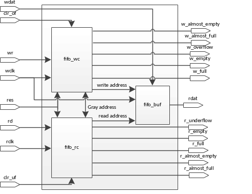

ehl_fifo состоит из 3 структурных частей: контроллера записи в буфер (fifo_wc), контроллера чтения из буфера (fifo_rc) и буфера (fifo_buf). Контроллер записи и буфер тактируются синхросигналом wclk, а контроллер чтения синхросигналом rclk.
Основные возможности:
Области применения:
Структурная схема
ehl_fifo состоит из блоков: fifo_rc, fifo_wc и fifo_buf.
Контроллер записи в буфер fifo_wc выполняет следующие функции:
Контроллер чтения из буфера fifo_rc выполняет следующие функции:
Буфер fifo_buf выполняет следующие функции:
| Название | Количество | Тип | Назначение |
|---|---|---|---|
| wclk | 1 | I | Тактовый сигнал интерфейса записи в буфер. Все триггеры в fifo_wc и fifo_buf тактируются нарастающим фронтом этого синхросигнала. |
| rclk | 1 | I | Тактовый сигнал интерфейса чтения из буфера. Все триггера в fifo_rc тактируются нарастающим фронтом этого синхросигнала. |
| w_reset_n | 1 | I | Активный низким уровнем сигнал асинхронного сброса в тактовом домене wclk. |
| r_reset_n | 1 | I | Активный низким уровнем сигнал асинхронного сброса в тактовом домене rclk. |
| clr_of | 1 | I | Активный высоким уровнем сигнал синхронного сброса флага w_overflow. |
| clr_uf | 1 | I | Активный высоким уровнем сигнал синхронного сброса флага r_underflow. |
| rd | 1 | I | Активный высоким уровнем запрос чтения буфера. |
| wr | 1 | I | Активный высоким уровнем запрос записи в буфер. |
| wdat | WIDTH_DIN | I | Данные, записываемые в буфер. |
| r_empty | 1 | O | Флаг опустошения буфера, синхронизованный с rclk. |
| w_empty | 1 | O | Флаг опустошения буфера, синхронизованный с wclk. |
| r_full | 1 | O | Флаг заполнения буфера, синхронизованный с rclk. |
| w_full | 1 | O | Флаг заполнения буфера, синхронизованный с wclk. |
| r_aempty | 1 | O | Флаг заполнения одной ячейки буфера, синхронизованный с rclk. |
| w_aempty | 1 | O | Флаг заполнения одной ячейки буфера, синхронизованный с wclk. |
| r_afull | 1 | O | Флаг наличия одной свободной ячейки в буфере, синхронизованный с rclk. |
| w_afull | 1 | O | Флаг наличия одной свободной ячейки в буфере, синхронизованный с wclk. |
| w_overflow | 1 | O | Флаг ошибки записи буфера. |
| r_underflow | 1 | O | Флаг ошибки чтения буфера. |
| rdat | WIDTH_DOUT | O | Данные, читаемые из буфера. |
| write_credit | log2(WIDTH_DIN>WIDTH_DOUT ? DEPTH*(WIDTH_DIN/WIDTH_DOUT) : DEPTH) | O | Количество свободных ячеек в буфере (количество возможных операций записи в буфер). |